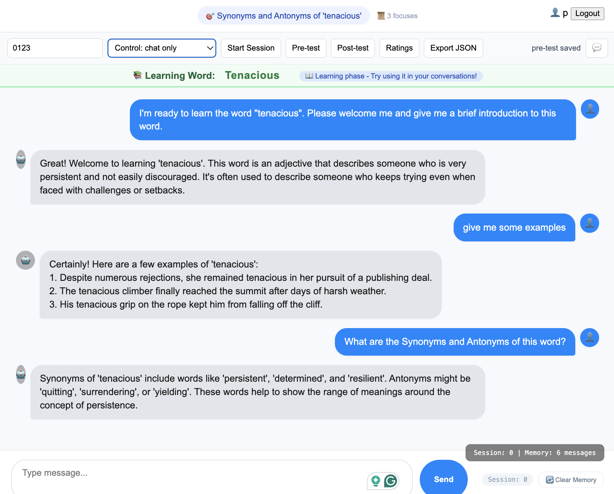
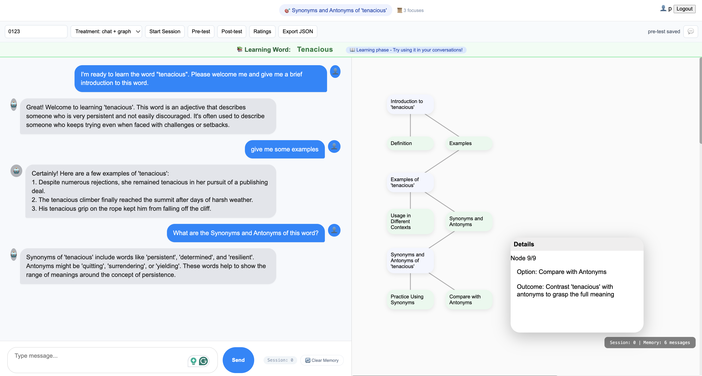
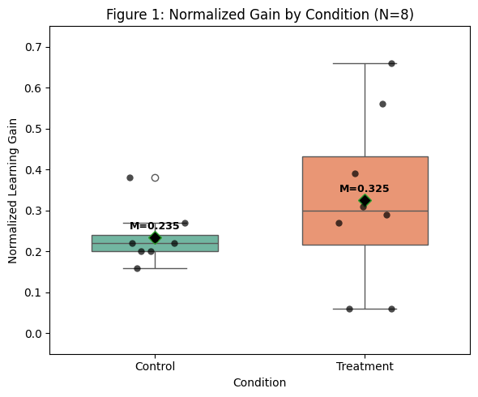
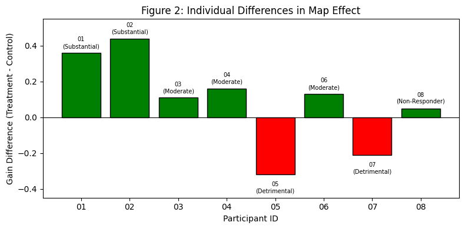

AP0011 – Human-Computer Interaction
Understanding When Graphical Augmentation Helps or Hinders LLM-Assisted Learning
Large language models (LLMs) are widely adopted as learning tools, yet their linear chat interfaces impose cognitive burdens: users lose track of goals, forget earlier answers, and struggle to maintain context.
We introduce MindKeeper, a system that augments LLM chat with a real-time graphical logic map that automatically summarizes each turn and visualizes the conversation's structure.
In a within-subjects experiment (N=8), we found trend-level improvement in learning gain (p=0.055, d=0.35), but no significant reduction in mental demand. Critically, 50% of participants showed strong benefits (visual thinkers, high LLM familiarity), while 25% experienced detrimental effects (non-academic, lower familiarity).
One size does not fit all. We derive design implications for adaptive, user-controlled visualization strategies.
Linear chat interfaces impose significant extraneous cognitive load on learners:
Users must build a mental model of the conversation structure — a cognitively demanding task.

Figure 1: Control Condition — Chat Only
Linear chat without graphical augmentation
Design Principle: Augmentation, not replacement.

Figure 2: Treatment Condition — Chat + Graphical Map
Real-time graphical logic map augmenting the chat interface
Watch MindKeeper in action — the graphical map updates in real-time as the conversation progresses.
Video 1: MindKeeper in Action
Real-time graphical map generation during an LLM learning conversation
Learning Gain (Avg)
+0.09
p = 0.055 · d = 0.35
Trend-levelBeneficiaries
50%
Visual thinkers, high LLM familiarity
Detrimental Effects
25%
Visual overload, distraction

Figure 3: Box Plot
Control (narrow) vs Treatment (wide spread)

Figure 4: Individual Differences
Beneficiaries (Green) vs Detrimental (Red)
Users should enable/disable the map based on preference.
Start simple for novices; add features gradually.
Tutorials for users unfamiliar with concept maps.
Minimize clutter; allow depth filtering.
Detect struggling users and suggest alternatives.
Core Principle
Respect Cognitive Diversity